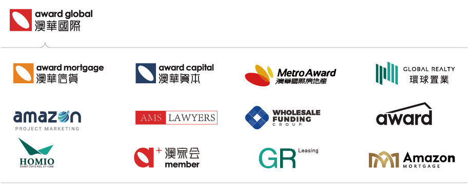

Becky Zhao
環球置業高級合夥人

深耕金融與房地產雙領域近 14 年
Becky 為環球置業高級合夥人，具備 10 年以上金融與房地產雙領域經驗，深耕雪梨並佈局全澳市場。她畢業於新南威爾斯大學金融碩士，持有專業財務規劃師資格，曾任職於多家澳洲大型銀行，累積深厚的機構金融與財富管理經驗。憑藉實際投資 18 戶澳洲不動產的經驗，以及千萬澳元等級的資產實力，她將專業金融觀點與房地產實務經驗結合，成為集團極具代表性的標竿管理者。
Our Team
環球置業 Global Realty以澳洲在地顧問、台北亞太營運中心與集團後勤支援共同協作，陪伴客戶從建案篩選、交易協調到租賃管理，建立更清晰、更穩健的跨境置產流程。
第一線銷售顧問負責需求診斷、區域判斷與交易協調，租賃團隊銜接長租與短租營運，後勤團隊則提供行銷、財務、人力與營運支持，讓服務節奏更穩定、回應更即時。
Strong Team
集團擁有前後台完備的專業團隊，前端囊括房地產開發團隊，以及資深銷售、海外置產、移民、留學、金融貸款領域顧問，提供一對一專屬規劃；後台配備市場、財務、人力專業營運團隊，各部門緊密協作、分工明確，全方位守護客戶從地產開發諮詢、金融配套到順利執行的每一個環節。
環球置業高級合夥人
深耕金融與房地產雙領域近 14 年
Becky 為環球置業高級合夥人，具備 10 年以上金融與房地產雙領域經驗，深耕雪梨並佈局全澳市場。她畢業於新南威爾斯大學金融碩士，持有專業財務規劃師資格，曾任職於多家澳洲大型銀行，累積深厚的機構金融與財富管理經驗。憑藉實際投資 18 戶澳洲不動產的經驗，以及千萬澳元等級的資產實力，她將專業金融觀點與房地產實務經驗結合，成為集團極具代表性的標竿管理者。
環球置業高級合夥人

深耕布里斯本市場的資深房地產專業人士
Nick 畢業於科廷大學與西澳大學，具備扎實的學術背景及 10 年以上澳洲房地產產業經驗。曾任職於大型建商環球物業，累積 7 年建商銷售企劃與專案實務經驗，參與超過 30 個大型房地產專案，涵蓋各類型不動產。憑藉對市場與專案週期的深入理解，截至目前個人累計銷售總額達 3.5 億澳元，是兼具專業實力與產業口碑的資深人士。
環球置業高級合夥人

墨爾本房地產財稅規劃專家，專注跨境投資
Tony 為環球置業高級合夥人，持有澳洲註冊會計師資格，具備金融與會計雙專業背景，投入澳洲房地產領域超過 12 年，兼具財稅規劃與不動產投資的雙重專業能力。多次榮獲個人及團隊銷售冠軍，已協助 300 多個海外家庭完成澳洲置產規劃；自 2018 年起投入房地產公司合夥經營，憑藉財稅專業與跨境服務優勢，拓展環球置業台灣及海外市場，量身規劃涵蓋全週期的澳洲資產配置方案。
環球置業高級合夥人

深耕台灣高端客群與精品通路市場
Ray 是台灣 Outlet 產業的領導人物，長期深耕高端客群，擁有深厚的在地高端人脈資源，在精品通路領域具高度聲望與影響力。2002 年創辦百貨精品服飾代理公司，經過 20 多年深耕發展，現已成為台灣具領先規模的進口品牌 Outlet 通路商與品牌代理商。多年來深耕高端客戶市場，累積扎實產業實力與人脈基礎，在品牌代理與通路營運領域享有卓越口碑。
環球置業銷售總監

深耕墨爾本房地產，以專業贏得信賴
Jackson 現任環球置業銷售總監，深耕澳洲房地產產業 14 年，以中古屋交易為主，同時涵蓋新建案銷售。他熟悉公寓、連棟別墅、獨棟住宅及土地與建屋套裝方案等各類住宅產品，憑藉多年第一線實務經驗，精準掌握澳洲房市走勢；精通華語、粵語與英語，為在地客戶及亞太投資人提供高效順暢、貼心可靠的一站式置產服務。
環球置業銷售總監

墨爾本中古屋專家・業績標竿
Jimmy 具備整整 10 年澳洲房地產產業經驗，曾任職於墨爾本多家知名在地開發商，負責銷售與行銷，兼具開發商端與仲介服務端的實務經驗。秉持誠信為本、透明服務的核心準則，近 5 年累計銷售總額接近 3 億澳元，獲評為環球置業官方認證核心房地產專家，也是深獲墨爾本在地市場肯定的實力派置產顧問。
環球置業銷售總監

深耕台灣市場，澳洲房地產投資與置業專家
Tobo 擁有逾十年台北 101 精品銷售顧問及高端客戶服務經驗，並將對品質、細節與客戶需求的高度重視，延伸至澳洲房地產投資與跨境置業領域。憑藉多年市場經驗、精準眼光與專業執行力，已累計服務近百組台灣家庭及投資人，協助客戶完成澳洲置業與長期資產規劃；從子女留學安居、自住需求到跨境投資，始終以安全、穩健及長期價值為核心。
環球置業銷售總監

台灣跨境資產配置專家，擅長數據驅動房地產行銷
Sergio 於澳洲取得心理學學士及工商管理市場專業碩士學位，並以全球頂尖市場研究學院前 5% 的優異成績畢業，兼具消費心理洞察、數據分析與市場行銷的專業能力。擁有 143 智商，並為 MENSA 門薩學會會員，具備出色的邏輯分析與數據解讀能力。憑藉多年跨境房地產與市場行銷經驗，他已累計服務近百組客戶，善於結合市場數據、區域發展與客戶需求，協助客戶制定更清晰、穩健的澳洲房地產配置方案。
環球置業銷售總監

深耕雪梨房地產近 10 年，集團核心資深成員
Jasmine 具備近 10 年澳洲房地產產業經驗，現任澳華國際房地產銷售總監，長期陪伴集團從創立走向成熟，深度參與開發與代理專案的全流程及銷售執行，是集團發展歷程中的重要推動者。她長期深耕雪梨房地產市場，熟悉公寓、獨棟別墅、連棟別墅及土地與建屋方案等各類物件，憑藉扎實的專業能力與細緻服務，在產業與客戶之間累積良好口碑。
環球置業銷售總監

深耕墨爾本房地產 10 年，中古屋交易專家
Alan 深耕澳洲房地產產業 10 多年，是墨爾本中古屋市場的資深實務專家，深入掌握在地中古屋市場邏輯與行情走勢，產業資歷深厚、實務經驗豐富。曾先後任職於 21 世紀不動產、高力國際及澳洲本地頂尖房地產機構，歷經大型平台的全方位歷練，累積豐富且優質的產業資源。
環球置業物業經理

近 10 年租賃與短租經驗，一站式資產管理顧問
Steve 深耕墨爾本房地產租賃與短租市場近十年，始終以屋主資產價值為核心，提供物件評估、家具配置、租客篩選、短租上架、日常維護、收益管理及風險控管等一站式服務。憑藉豐富的實務經驗，他不僅重視出租成果，更嚴格把關每一項營運細節，透過即時溝通、透明流程、妥善維護及持續優化，協助屋主提升資產營運效率，讓物業管理更省心、更安心。
環球置業物業經理

累積逾 10 年相關經驗，專精 Airbnb 全流程營運
Michael 深耕雪梨市場，累積逾十年物業管理與 Airbnb 短租營運經驗，熟悉住宅租賃、屋主關係維護、資產管理，以及 Airbnb 短租專案從規劃、上架到日常營運的完整流程。憑藉精準的市場判斷與高效執行能力，他能依據不同物件條件，量身規劃出租策略與收益方案；並熟悉 Airbnb 平台規則、動態定價、多平台管理及營運優化，協助屋主提升出租效率與資產表現。
環球置業物業經理

雪梨房地產資產管理專家，10 年專業守護
Marco 具備 10 年房地產租賃與管理經驗，深耕雪梨市場，以專業守護資產，憑用心服務累積口碑。從物件篩選、精準媒合租客，到日常維護管理與全流程風險控管，每個環節都嚴謹細緻、規範高效。憑藉扎實的產業經驗、標準化作業流程與快速回應機制，持續協助屋主穩健營運資產並提升價值，是雪梨市場值得託付的房地產資產管理夥伴。
Leasing 後台管理負責人

豐富的後台管理經驗，全能物業管理專家
Suky 專注於住宅租賃與物業管理，服務內容涵蓋租賃管理、房東與租客溝通、維修協調、租金帳務管理及租約續約等事務。她重視主動溝通與細節管理，致力於讓每一個環節更加高效、順暢。秉持專業、細心且可靠的服務態度，Suky 希望為房東提供安心、省心的物業管理體驗，同時也為租客打造舒適、穩定且具品質的居住環境。
澳華優貸（WFG）執行長
Jeffrey 於 2006 年畢業於澳洲蒙納許大學金融系，並取得澳洲註冊會計師（CPA）資格。曾任職於普華永道，專責企業諮詢、財務分析與獲利評估；其後投入澳洲房地產開發，歷任知名開發商及保利地產維州業務，參與住宅與商業專案，總開發價值逾 6 億澳元，並主導超過 300 戶住宅的開發與專案管理，累積近 20 年房地產與金融實務經驗。
現任澳華優貸（WFG）執行長，Jeffrey 專注於海外人士在澳洲置業與投資的融資需求，能依據客戶身分、海外收入與資產狀況，整合基金及非銀行金融資源，提供更具彈性的融資方案。
澳洲房地產、商業及移民法律事務專家
Samuel 取得澳洲新南威爾斯大學 Juris Doctor 學位，具近十年澳洲法律執業經驗，為澳洲最高法院及新南威爾斯州最高法院執業律師。長期專注於房地產、商業及公司法領域，曾參與及承辦總價值逾億澳元的房地產與商業交易，服務對象涵蓋開發商、金融機構、企業及投資人。
他專精房地產交易、大型開發案、商業合約及公司治理，能從合約條款、交易架構、權利義務及風險控管等面向，為海外客戶提供清晰務實的法律建議，協助降低跨境購屋風險。
澳華集團專業會計顧問
Kelvin 為澳洲太平紳士、聖約翰榮譽騎士、澳洲註冊會計師、持牌稅務師、自管養老金審計師及 ASIC 註冊代理，擁有澳大利亞新南威爾斯大學國際稅法及臥龍崗大學專業會計雙碩士背景，長期專注稅務規劃、企業架構、高淨值財富管理及商業諮詢。
其領導的樂信會計師事務所總部位於雪梨 CBD，並在北雪梨、墨爾本及布里斯本設有分支機構，位列全澳會計師事務所前 4%。工作之餘，他亦是雪梨晨跑團 JOY RUNNERS 創辦人。
環球置業背靠實力雄厚的澳華國際，匯集澳華國際多元領域產業資源，築就穩健扎實的集團營運根基。
透過金融貸款、法律服務、物業管理、專案行銷、短租營運與海外置產等多元資源整合，一站式實現置產安家、海外移民與國際留學完整家庭規劃需求。


在環球置業，每一位第一線夥伴的成功，都有一套成熟、專業、高效的全流程後勤支援體系作為後盾。從品牌行銷、人力資源、財務風控到銷售營運，跨部門團隊以標準化流程與快速回應機制，提供從行銷素材、活動執行、人才招募到數據決策的全方位支援。
讓第一線夥伴專注服務客戶、拓展市場，不必分心處理行政庶務。